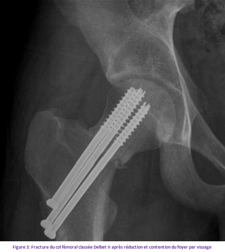
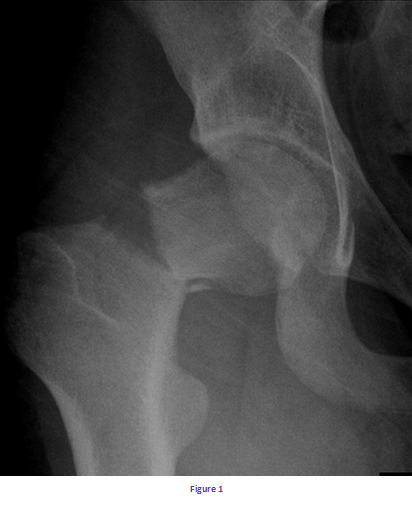

Cas clinique 4
Hanche
Patiente de 14 ans, sans antécédents particuliers, s’était présentée aux urgences suite à un accident de la voie publique qui avait occasionné chez elle un traumatisme avec un point d’impact au niveau du membre inférieur droit. L’examen à l’admission avait retrouvé une patiente en bon état général, on avait noté l’existence d’une impotence fonctionnelle totale du membre droit associée à une douleur à la palpation de la cuisse droite sans effraction cutanée ni troubles vasculo-nerveux.
1. Interprétez la radiographie, quel est votre diagnostic ? Figure 1 R1 C1 AP ++
4. Quel est le délai de décharge, d’éviction scolaire et sportive ? ? R4
Réponse :
Il s’agit d’une fracture du col du fémur : transcervicale droite non déplacée classée type II selon Delbet.
Réponse :
On propose un traitement chirurgical (figure3) :
- Réduction en urgence au bloc opératoire, sous anesthésie générale, sur table orthopédique sous contrôle scopique à l’amplificateur de brillance en abduction et rotation interne.
- Contention du foyer de fracture par ostéosynthèse interne : vissage par vis canulées.
- Repos strict.
Mise en charge après consolidation.

Réponse :
C’est la nécrose de la tête fémorale.
Réponse :
C’est la nécrose de la tête fémorale.
Réponse :
La mise en décharge sera prudente et la mise en charge ne sera autorisée qu’après disparition complète du trait.
- Eviction scolaire : 2 à 4 mois.
- Eviction sportive : 1 an.
Commentaire :
- Type II :
Fracture transcervicale, la plus fréquente des fractures du col du fémur.
La disposition vasculaire explique le risque élevé de nécrose.
On distingue selon Pauwels, les fractures à trait horizontal de meilleur pronostic que celles à trait vertical.
Commentaire :
Possibilités et indications thérapeutiques :
Le traitement des fractures du col du fémur de l’enfant est chirurgical dans la plupart des cas et doit être réalisé en urgence.
Quelques particularités propres à l’enfant doivent être connues.
Le périoste de l’enfant est épais et résistant autour du col du fémur et va limiter le déplacement dans près de la moitié des cas. En revanche s’il est déchiré et interposé dans le foyer de fracture, il empêchera une réduction anatomique. En raison de la vascularisation de l’épiphyse fémorale, les fractures cervicales ou certaines fractures cervico-trochantériennes peuvent léser les vaisseaux périostés lors de leur trajet sous le périoste, le long du col fémoral entraînant un risque de nécrose épiphysaire. L’os spongieux du col du fémur et de la région trochantérienne est très dense et résistant, offrant une excellente prise au vissage.
- Type I :
La fixation chirurgicale est de règle, parfois même en percutané par une ou deux broches chez le jeune enfant ou des vis à compression chez l’adolescent.
- Type II :
Les fractures non déplacées et les fractures peu déplacées à trait horizontal peuvent être traitées par plâtre pelvi-pédieux pendant 4 à 6 semaines, en surveillant régulièrement l’absence de déplacement secondaire.
Les fractures peu déplacées à trait vertical sont instables et il est prudent de les traiter chirurgicalement par ostéosynthèse à foyer fermé.
Les fractures déplacées doivent être ostéosynthésées. La fixation se fait par deux vis ne franchissant pas le cartilage de croissance.
- Type III :
Le traitement est chirurgical.
La réduction est obtenue comme pour le type II soit sur table orthopédique ou par abord chirurgical antéro-externe.
S’il existe un décollement apophysaire du grand trochanter, il faut le fixer par un cerclage à effet de hauban appuyé sur 2 broches verticales, après réduction et fixation du trait principal.
- Type IV :
Le traitement orthopédique par traction collée permet d’obtenir parfois un bon alignement en flexion à 90° (Traction au Zénith). Sinon fixation par une vis plaque surtout dans le cas de polytraumatisme.
Commentaire :
- La Nécrose avasculaire ou aseptique :
C’est la complication la plus fréquente et la plus invalidante Le risque de nécrose aseptique est directement proportionnel à l'importance du déplacement initial des fragments fracturaires et à l'importance des dégâts vasculaires au moment du traumatisme.
D'autres facteurs sont associés à l'augmentation de ce risque de nécrose aseptique, ce sont les types l ou II et un âge supérieur à dix ans.
Type I :
La nécrose survient dans près de 70%. Le pronostic est défavorable quel que soit la précocité et le type de traitement.
Type II, III:
Le risque de nécrose est plus élevé si les fractures sont déplacées ou le traitement différé.
La précocité de la réduction est un facteur d’amélioration du pronostic, ainsi que l’évacuation de l’hématome intra capsulaire.
Le délai de visualisation radiologique de la nécrose est d’un an, d’où l’intérêt de la scintigraphie osseuse dans le premier mois postopératoire pour un diagnostic plus précoce.
Commentaire 4
La Nécrose avasculaire ou aseptique :
C’est la complication la plus fréquente et la plus invalidante Le risque de nécrose aseptique est directement proportionnel à l'importance du déplacement initial des fragments fracturaires et à l'importance des dégâts vasculaires au moment du traumatisme.
D'autres facteurs sont associés à l'augmentation de ce risque de nécrose aseptique, ce sont les types l ou II et un âge supérieur à dix ans.
Type I :
La nécrose survient dans près de 70%. Le pronostic est défavorable quel que soit la précocité et le type de traitement.
Type II, III:
Le risque de nécrose est plus élevé si les fractures sont déplacées ou le traitement différé.
La précocité de la réduction est un facteur d’amélioration du pronostic, ainsi que l’évacuation de l’hématome intra capsulaire.
Le délai de visualisation radiologique de la nécrose est d’un an, d’où l’intérêt de la scintigraphie osseuse dans le premier mois postopératoire pour un diagnostic plus précoce.
Figure 1

Pour approfondir :
Les fractures du col du fémur sont des lésions rares mais graves surtout si elles ne sont pas correctement et rapidement prises en charge.
Elles surviennent essentiellement suite à des accidents de la voie publique, des accidents de bicyclette, des chutes de lieu élevé, et également ces fractures peuvent se rencontrer lors d'un accouchement difficile (on parle alors de fracture obstétricale).
Le risque principal des fractures du col du fémur est lié à la présence des artères (figure 2) qui irriguent la tête du fémur et qui passent au niveau du col (artères circonflexes) : en cas de lésion, une nécrose de la tête du fémur peut s'installer, et provoquer de graves séquelles sur l'articulation de la hanche.

Références
- HOLTON C, FOSTER P , TEMPLETON P.
Fractures of the femoral neck in children.
Current Orthopaedics 2006; P: 361-366.
- ALAIN VANNIEUSE, CHRISTIAN FONTAINE.
Fractures de l’extrémité supérieure du fémur.
Approche pratique en orthopédie-traumatologie 2000 ; P: 155-156.
- EL HAMDANI T.
LES FRACTURES DU COL DU FEMUR CHEZ L’ENFANT A L’HOPITAL HASSAN II D’AGADIR.
Pour l’obtention du doctorat en médecine ; thèse n°307/2007.
- TOUZET PH.
Fractures du col du fémur.
Orthopédiartie 4,1994; P: 40-43.
- OZONOFF MB.
The hip . In "Pediatric Orthopedic Radiology".
WB Saunders, Philadelphia, 1992, 164-303.
- OSBORNE D, EFFMANN E, BRODA K, HARRELSON J.
The development of the upper end of the femur with special references to its internal architecture .
Radiology 1980, 137:71-78.
- MIRDAD T.
Fractures of the neck of femur in children: an experience
at the Aseer Central Hospital, Abha, Saudi Arabia.
Injury, Int. J. Care Injured 33 (2002); 823–827.
- NOROUZI M, NADERI MN.
Femoral neck fractures in children: A follow up study of 19 cases.
European Journal of Trauma and Emergency Surgery 2008; P: 123-125.
- MORSY HA.
Complications of fracture of the neck of the femur in children.
Injury, Int. J. Care Injured 32 (2001); 45–51
- TOUZET PH.
La fracture de col de fémur chez l’enfant cahiers d’enseignement de la scoft.
Conférence d’enseignement 1994 ; pp :121-136.
- COLONNA PC
Fracture of the neck of the femur in children.
Am J Surg 1929 ; 6 : 793-797.
- MORRISSY R.
Hip fractures in children.
Clin Orthop 1980 ; 152 : 202-210.